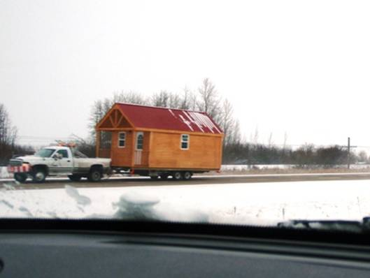
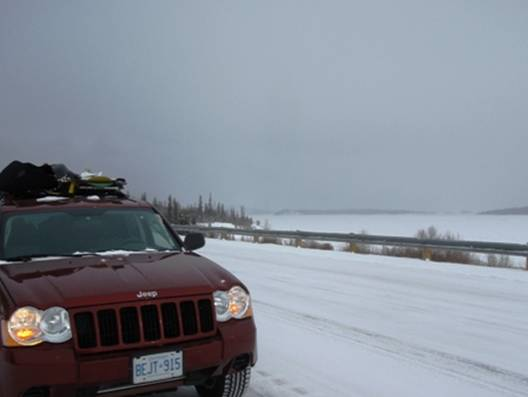
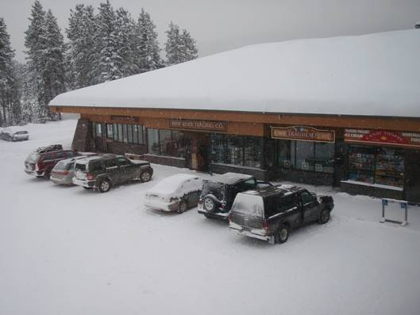
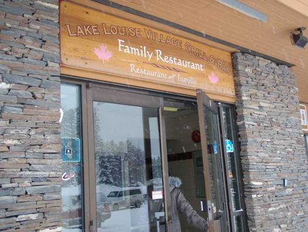
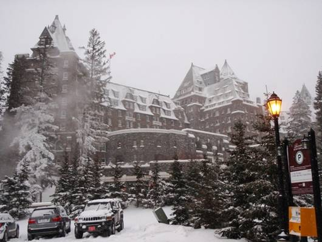
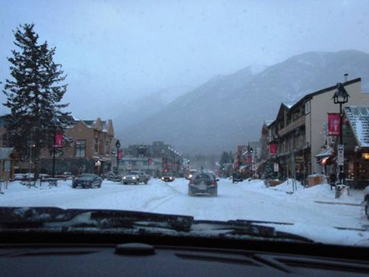

□14日目(2/25)Edmonton→Radium Hot
Springs

今日は予定が長いため、早朝起床で、朝食をとらずに宿を出発。当初の予定では、Calgary(カルガリー)で一泊し、翌日一気にバンクーバーへ向かうとしていたが、計画を変更し、今日ロッキーに向かい、Ice Field Parkway(アイスフィールド･パークウェイ)を走り、Columbia(コロンビア)大氷原に行き、Radium Hot Springsの温泉に入ることにした。900km弱の結構大変な距離となる。
朝の気温は-18℃。予想以上に寒い上に雪も降っている。しかし車に乗ってしまえば寒さは何も問題はない。エドモントンから南下しようとしていたが、市街地の道路が複雑で、なかなか抜け出せなかった。かなり大回りをしてしまったような気がする。ようやく郊外に抜け、しばらく進んだところにある原油の街、Leduc(レダック)に入る。朝食はレダックのファストフード店”TimHortons”のドライブスルーで買うことに。しかし、4人分の注文を細かくすることができず、みんな同じセットとなった。ベリーミックスマフィン、エッグサラダサンドとジュースのセット。結構おいしく、気に入った。


レダックからも、分離帯つきのハイウェイを南へと進む。Red Deer(レッド･ディア)の街の手前で地図を見ていて、カルガリーまで行かずに、ここからロッキーに向かう道を発見した。こちらの方が距離は明らかに短くなる。予定変更し、レッド･ディアから西へと向かう11号線に乗り換える。交通量は少ないが、途中、美しい氷の湖のあるSylvan Lake(シルヴァン･レイク)の街、ロッキーの麓のRocky Mountain Houseの街では、活気があり、見どころとなった。


Rocky Mountain Houseの街からは、給油所が全くなくなる。ロッキーに向かう道は、ほとんど他の車も通らず、先に行けば行くほど、路面上の雪も多くなってきた。アイスフィールドパークウェイの手前の国立公園通過ゲートの所では、除雪がほとんどされておらず、路面の雪が深くなった。スピードをかなり落として進むことに。ちなみにこの時期ゲートに人はいない。ゲートを抜けてアイスフィールド･パークウェイに出てしまうと、除雪はある程度行われていた。それでも所々に真っ白な路面があり、油断はできない。

アイスフィールドパークウェイをジャスパー方面(北西)に進み、コロンビア大氷原を目指す。荒々しい雪山や岩壁が道の左右に迫ってくるように見える。ワインディングロードを慎重に走っていくと、駐車場やロッジが現れた。が、この時期は閉鎖されている。コロンビア大氷原へのトレイルも、深い雪で閉ざされていた。雪が降っているので、遠くからも、その全貌を見ることができず、少し残念。


今度は来た道を引き返し、Lake Louise(レイク･ルイーズ)へと向かう。人口1000人にも満たない小さな町だが、「ロッキーの宝石」と呼ばれるほど美しいルイーズ湖があり、夏ならば、観光客が押し寄せてくる所。冬季にも、近くに100以上のコースがあるLake Louiseスキー場があるので、ウィスラーのようににぎわっているかなと思ったが、雪に覆われた町はひっそりとした雰囲気。レストランで昼食を食べたが、他に客は全くいなかった。


レイクルイーズの次は、1号線でBanff(バンフ)に向かう。途中で雲が薄くなり、お城のような形の山”Castle Mountain”を見ることができた。鋭い岩のピークがいくつも並んだ山で、本当に城壁のようである。

キャッスル山を回り込むと、バンフに到着。スキーやボードの板を抱えた人がたくさん歩いている。バンフの近くには有名な大型のスキー場がたくさんある。しかし、今回時間はほとんどないので、見所だけサッと回ることに。まずは、壮大な古城風最高級ホテルである” The Fairmont Banff Springs”(フェアモント･スプリングス)の前まで行ってみることに。その後は20分程度の自由行動。冬は夏に比べて人が少ないので、土産ものなどは割引セールをしている所が多いようだ。ここには大橋巨泉がオーナーの、OKギフトショップという土産物屋もあった。



バンフを出発し、森の中のワインディングロードBow Valley Parkway(ボウ･バレー･パークウェイ)を進み、レイクルイーズからロッキーの山を下っていく。次第に暗くなり、雪の多い下り坂を慎重に下っていく。”Radium Hot Spring”と言うのは温泉の名前でもあり、周辺の町の名前でもある。ラジウム温泉に到着した時には、19時半頃で、辺りは真っ暗になっていた。温泉は湯温が少し低いプール型のものと、湯温が高い浴槽型に分かれており、どちらも混浴露天。水着は着用しないといけないが。こんな時間だが、たくさんの老若男女でにぎわっていた。温泉プールの方は広く、泳ぎ回ることもできる。直登は用意周到にゴーグルを持参していた。熱い方の浴槽は10人も入れば満員の小さなものだが、気持ちの良い温度で、旅の疲れが取れた。気になった点は、塩素のにおいが結構残ったこと。やはり温泉と言うよりは、プールと言う印象だった。


今夜は、泊まる宿をまだ見つけていなかった。幸いモーテルが何件かあったので、よさそうな所にチェックインできた。なんと1部屋85ドル。安すぎる。しかし夕食の方は、9時を回っているため、開いている店がなかなか見当たらない。見つけたのは、Husky(ハスキー)というガソリンスタンドの売店内にある小さなレストラン。手ごろな値段で食べられた。